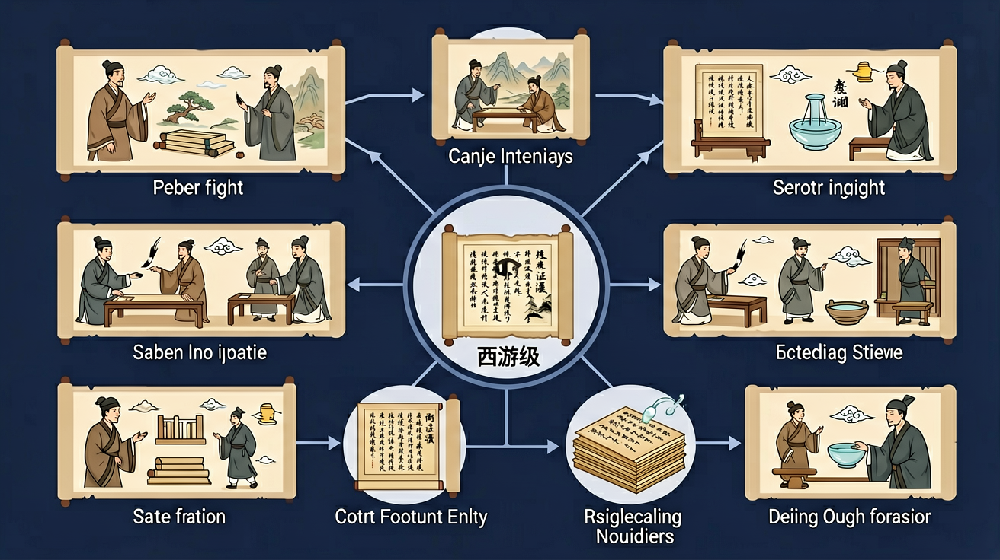

真实情境
《西游记》中的语言艺术
语文课上，老师带领同学们阅读《西游记》中的'三打白骨精'片段。同学们被孙悟空机智勇敢的形象所吸引，但对其语言表达的特点不甚了解。老师引导同学们关注文本中的具体描写，分析作者是如何通过语言塑造人物形象的。
已有经验
学生已经阅读过《西游记》的部分章节，对主要人物和故事情节有基本了解。
真正卡点
学生难以准确识别文本中的语言特点，无法将具体描写与人物形象建立联系。
本课任务
通过分析《西游记》中的具体片段，理解作者如何运用语言技巧塑造人物形象，并体会其表达效果。
《西游记》中，孙悟空的第一个师傅是？
语文课上，老师带领同学们阅读《西游记》中的'三打白骨精'片段。同学们被孙悟空机智勇敢的形象所吸引，但对其语言表达的特点不甚了解。老师引导同学们关注文本中的具体描写，分析作者是如何通过语言塑造人物形象的。
学生已经阅读过《西游记》的部分章节，对主要人物和故事情节有基本了解。
学生难以准确识别文本中的语言特点，无法将具体描写与人物形象建立联系。
通过分析《西游记》中的具体片段，理解作者如何运用语言技巧塑造人物形象，并体会其表达效果。
怎样用文本证据解释《西游记》中的表达效果与思想情感？
先选一个你关心的问题。后面的例子、提示和 AI 学伴都会围绕这个问题来帮你推进。
选择或输入后，本课会围绕你的问题展开。
理解《西游记》通过神魔故事反映现实生活的创作手法，掌握从文本细节分析人物形象和主题思想的方法
三打白骨精中孙悟空识破妖怪变化（村姑、老妇、老翁），体现其火眼金睛与坚定信念的文本描写（第27回）
先标注妖怪三次变化的原文描写，再对比孙悟空识破时的语言动作，最后分析人物性格特征
易将'三变三打'简单归结为重复情节，忽略作者通过递进式描写强化人物形象的匠心
课堂任务：请用“现象/文本/地图/实验数据 → 关键证据 → 学科解释 → 迁移应用”四步，重写一个关于「《西游记》：从文本证据到表达效果」的新问题。
改写材料或切换分析维度，观察答题链如何变化。
如果你能解释“怎样用文本证据解释《西游记》中的表达效果与思想情感？”，这节课就真正过关了。
《西游记》是浪漫主义神魔小说，写唐僧师徒历经九九八十一难西天取经的故事。作品塑造了神通广大、爱憎分明的孙悟空等形象，想象奇特，寓庄于谐，寄寓着惩恶扬善、追求理想的精神。
阅读时梳理典型情节（如三打白骨精、真假美猴王），从人物的言行分析孙悟空、猪八戒、唐僧等的性格;透过神魔故事体会作品对现实的影射和对正义、坚韧精神的歌颂。
常见误区：常见误区是只看打斗热闹，忽视人物性格和作品寓意。阅读应从三打白骨精等典型情节分析孙悟空等人物性格，透过神魔故事体会对现实的影射，理解作品惩恶扬善、追求理想与歌颂坚韧的精神内涵。
《西游记》主要讲述什么故事？

写出本课答题路径，并标出每一步需要的文本证据。
用本课方法分析一段新文本，至少引用两处原文。
修改一个空泛答案，让它变成有证据、有方法、有表达效果的高分答案。
记忆锚点：名著阅读不能只记情节，要看人物成长和主题表达。
请选择一段课外文本或自己的作文片段，设计一道与本课相关的问题。你需要写出标准答案，并标明每一分对应的证据、方法、效果和表达。